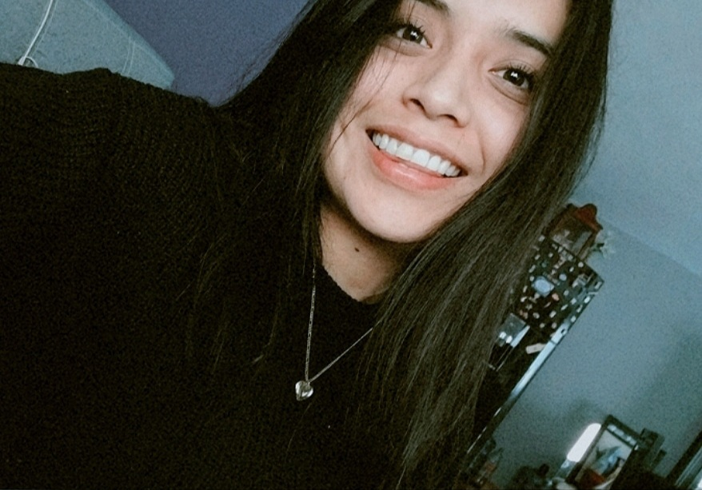

Diana Laura Garcia Martinez
Mi nombre es Diana Laura Garcia Martinez tengo 24 años, actualmente soy estudiaante de Diseño Gráfico en la Universidad Autónoma de Puebla, ademas de estudiar por las mañanas en las tardes trabajo en el área de diseño en una empresa de Marketing y uno de mis pasatiempos favoritos es ver peliculas y comer pizza además de esi tambien me gusta y soy fan de los días lluviosos y mi color favorito es el lila y sus derivados.